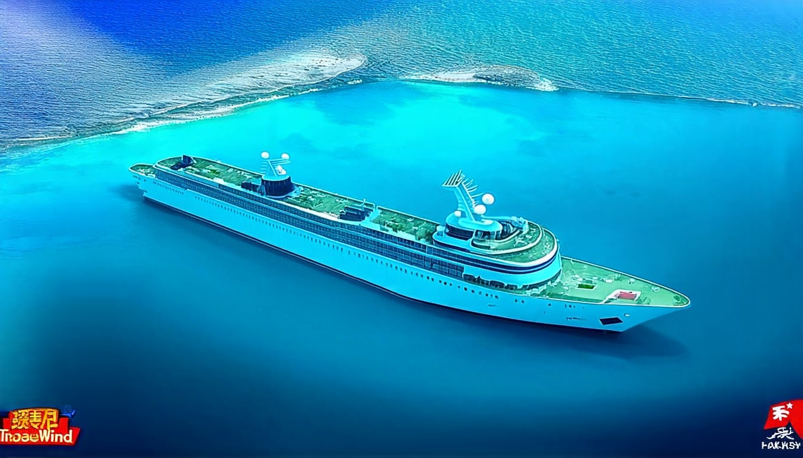
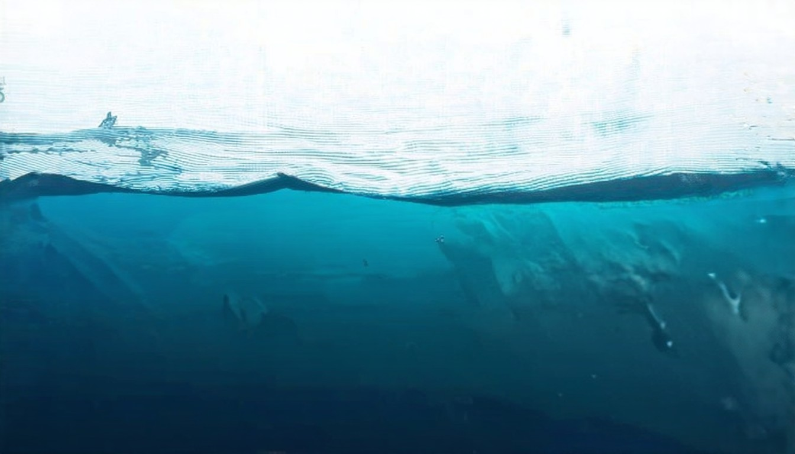
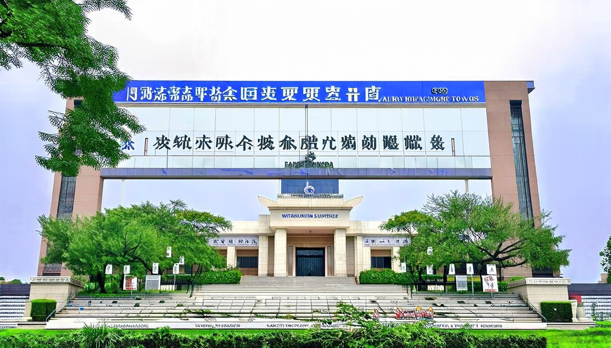
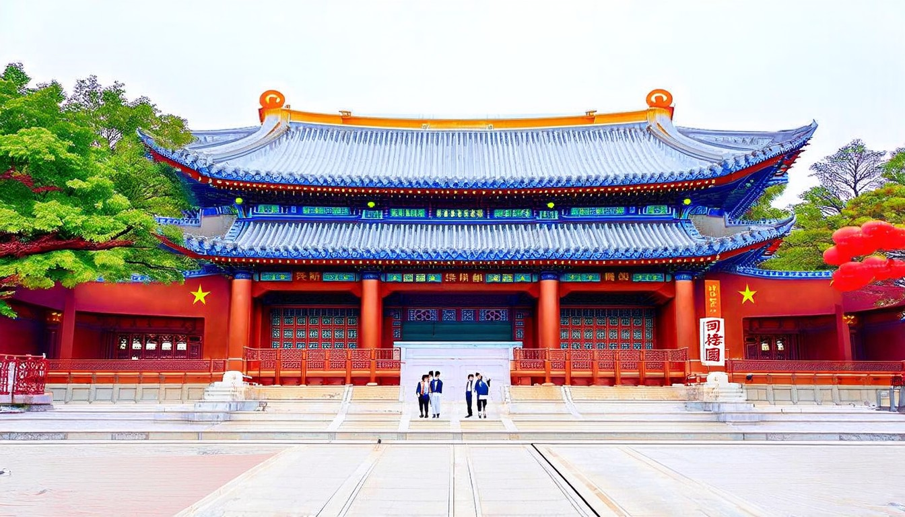
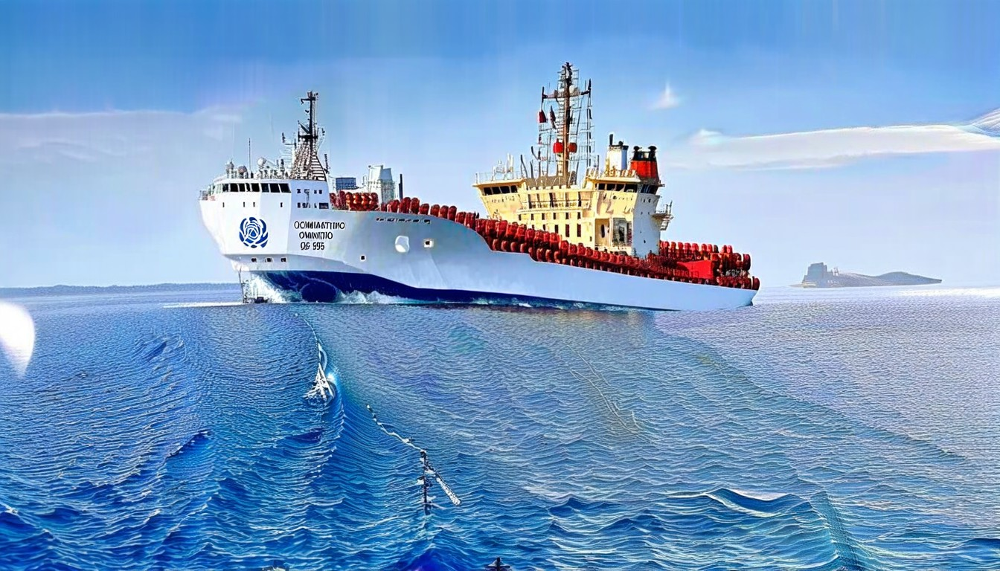
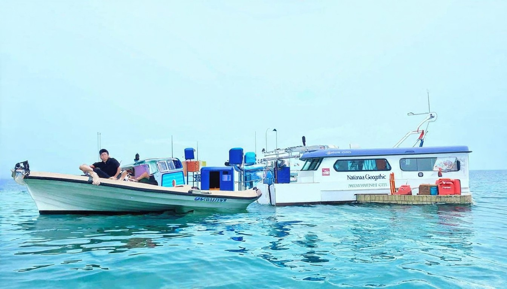

今天全世界都在看的新闻2026.4.1 - 今日头条
据俄罗斯媒体报道，俄罗斯驻伊朗大使杰多夫31日在接受采访时表示，伊朗最高领袖穆杰塔巴·哈梅内伊目前身在伊朗，但“出于显而易见的原因”避免公开露面。杰多夫
2026年04月19日 · 全球热点速递
← 返回今日新闻据俄罗斯媒体报道，俄罗斯驻伊朗大使杰多夫31日在接受采访时表示，伊朗最高领袖穆杰塔巴·哈梅内伊目前身在伊朗，但“出于显而易见的原因”避免公开露面。杰多夫
今天是2026年4月4日，美伊冲突急剧升级：伊朗首次成功击落美国F-15战斗机，一名机组人员获救，另一人下落不明，搜救行动正在危险环境中进行。特朗普总统表示
美伊伊斯兰堡会谈因核问题无果而终，特朗普宣布美东时间4月13日10时起，美军对所有进出伊朗港口的海上交通实施封锁，涵盖波斯湾和阿曼湾，引发国际油价开盘
# 新浪新闻中心. #### 新浪新闻客户端. # “让互联网更好造福人民、造福世界”. # 伊朗放话将控制霍尔木兹海峡至战争终结. # 伊朗副外长：不会向美国输送浓缩铀. # 韩军称朝鲜发射数枚弹道导弹 朝方暂无回应. # 五一假期首尾高峰时段增开多趟夜间高铁. # 冲线！“闪电”完成2026人形机器人半马. 【No.319】图数室｜2026，人形机器人量产元年？. ### 蜂鸟. ### 前主

TradeWinds 4月14日报道称，Mercuria据称已在中国船厂签下VLCC和LR2新造船订单，总投资规模约6.5亿美元。. TradeWinds 4月14日报道称，SGMF（Society for Gas as a Marine Fuel，船用气体燃料协会）最新发布的第三版LNG船用燃料生命周期评估（LCA）认为，与船用柴油相比，LNG作为船用燃料的温室气体排放可降低最多29%；DNV和
### 焦桐常青，丰碑在民心. 对焦裕禄，习近平总书记一直十分崇敬，视为人生榜样。**2026-04-18 14:38**. ### 习近平谈网络安全和信息化. 历经多年发展，网信事业取得历史性成就，网络强国建设迈出坚实步伐。《中国网信》杂志梳理习近平总书记相关重要论述，与你一起回顾学习。**2026-04-18 14:35**. ### 这段“红色旅程” 中越领导人共同开启. 4月15日，习近平
## [紐約市25處電單車「換電站」選址 徵民意](https://www.worldjournal.com/wj/story/121390/9450627?from=wj_msg "紐約市25處電單車「換電站」選址 徵民意"). ## [京都11歲男童命案 日媒：繼父曾手機搜尋「如何棄屍」](https://www.worldjournal.com/wj/story/121488/9451081

# 海事新闻头条汇总（2026年4月14日—15日）. 路透社4月14日报道称，在美国针对伊朗港口相关船舶实施封锁后的首个完整日，至少仍有8艘船通过霍尔木兹海峡；同日，美国军方称已有6艘商船被要求掉头。这说明霍尔木兹并非“完全停航”，但已经进入“具体通行规则、检查、绕航和掉头”并行的执行阶段，风险依旧很高。. 路透社4月14日报道称，英国和法国正组织多边讨论，议题包括航行自由、若海峡继续关闭时的经
[新聞](./?hl=zh-TW&gl=TW&ceid=TW%3Azh-Hant). [首頁](./home?hl=zh-TW&gl=TW&ceid=TW%3Azh-Hant). [台灣](./topics/CAAqJQgKIh9DQkFTRVFvSUwyMHZNRFptTXpJU0JYcG9MVlJYS0FBUAE?hl=zh-TW&gl=TW&ceid=TW%3Azh-Hant). [國際](
再出招貝森特：將強制銀行蒐集公民身分資料 8643 ; 傳北京願接收或稀釋伊朗濃縮鈾協助結束伊朗戰爭 6947 ; 買菜越來越貴？退休族靠這10招悄悄省下一筆 6311 ; 正準備退休餐飲
*  ## [馬六甲海峽：為何全球貿易的另一個
新华每日电讯 经济参考 瞭望 半月谈 中证报 上证报 中国记者 中国名牌 中国传媒科技 环球 瞭望东方周刊 参考消息 新华出版社. 北京 天津 河北 山西 辽宁 吉林 上海 江苏 浙江 安徽 福建 江西 山东 河南 湖北 湖南 广东 广西 海南 重庆 四川 贵州 云南 西藏 陕西 甘肃 青海 宁夏 新疆 内蒙古
笔尖绘出家乡情 云林社区绘本发表 启动走读单车旅笔尖绘出家乡情 云林社区绘本发表 启动走读单车旅. 神韵舞蹈家技艺精湛 高级工程师：非常喜欢神韵舞蹈家技艺精湛 高级工程师：非常喜欢. 学区总监赞神韵演员“舞姿优雅 鼓舞人心”学区总监赞神韵演员“舞姿优雅 鼓舞人心”. 澳日签署首批“最上级”护卫舰建造协议澳日签署首批“最上级”护卫舰建造协议. 丁当献唱《爱拼才会赢》 揭出道19年拚搏心声丁当献唱《爱
* [实时行情](https://cn.investing.com/markets/). * [外汇](https://cn.investing.com/currencies/). * [期货](https://cn.investing.com/commodities/). * [黄金](https://cn.investing.com/commodities/gold). *
# 华尔街见闻. 美元指数 98.07 -0.14 (-0.14%)欧元/美元 1.1797 +0.0016 (+0.14%)美元/日元 159.07 -0.11 (-0.07%)现货黄金 4804.97 +14.31 (+0.30%)WTI原油 90.90 -3.79 (-4.00%)离岸人民币 6.8229 +0.0019 (+0.03%). 7家平台涉“幽灵外卖”被罚没近36亿元：拼多多15

06. 04月. 在宁高校南京市新时代青少年校外教育实践（劳动）阵地工作推进会在我校召开. 06. 04月. 我校受邀参加潍坊发展大会. 04. 04月. 我校正式启动2026年全校教育思想大

### 科技日报报系. ### 教育部发布文件助力青少年阅读素养提升. ### 国家网信办等十部门联合公布《促进和规范电子单证应用规定》. ### 工信部等五部门联合印发《工业产品绿色设计指南（2026年版）》. ### 我国将探索词元交易等新型数据集交易模式. ### 农业农村部集中整治禁限用农药非法生产经营使用行为. ### 刘合：打造中国“数字石油工人”. ### 邬江兴：将“安全基因”植入

# 国际海事组织批准船舶注册新准则. # 危险货物赔偿制度即将生效. 比利时、德国、荷兰王国和瑞典交存 2010 年《有害和有毒物质公约》的批准书。. # "零散的应对措施已不再足够"：国际海事组织秘书长. # 便利委员会批准数字化战略和网络安全措施. #### 国际海事组织概览. ### 开放申请：为客轮脱碳可行性研究提供技术援助. ### 科摩罗在国际海事组织支持下成立国家海上保安委员会. 国

## 该区域包含我要投稿. ## 该区域包含浦东新区、黄浦区、静安区、徐汇区、长宁区、普陀区、虹口区、杨浦区、宝山区、闵行区、嘉定区、金山区、松江区、青浦区、奉贤区、崇明区. 浦东新区 黄浦区 静安区 徐汇区 长宁区 普陀区 虹口区 杨浦区 宝山区 闵行区 嘉定区 金山区 松江区 青浦区 奉贤区 崇明区. ## 该区域包含头条新闻. ## 该区域包含直播上海. ## 该区域包含热点搜索. ## 该
Thumbnails Document Outline Attachments. Previous. Next. Highlight all. Match case. Whole words. Presentation Mode Open Print Download Current View.